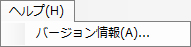

はじめに
TextureViewer は、テクスチャー中間ファイル ( .ftxa / .ftxb ) をプレビューするツールです。
インストールについては セットアップマネージャー をご覧ください。
起動
TextureViewer は、%USERPROFILE%/AppData/Local/Nintendo/ThumbnailExplorerExtensions/Tools/ にインストールされています。
ThumbnailExplorerExtensions/Tools/TextureViewer.exe を実行して、ツールを起動します。
セットアップマネージャー で関連付けを行っている場合、テクスチャー中間ファイルをエクスプローラーから開くとこのツールが起動します。
画面の説明
- タイトルバー（A）
TextureViewer に読み込まれているファイル名をフルパスで表示します。
-
メインメニュー （B）
- プレビューの拡大縮小を変更します。（C）
- プレビューするチャンネルを選択します。（D）
- ミップマップ表示の ON / OFF を切り替えます。（E）
- テクスチャーの詳細情報を表示します。（F)
- テクスチャープレビュー領域です。（G)
※対応している画像をドラッグ & ドロップすることでもプレビューできます。
- テクスチャー位置（H)
読み込まれた画像ファイルに対してマウスオーバーした際のマウス位置を表示します。
- RGBA設定（I)
画像ファイルにマウスオーバーした位置の RGBA の値を表示します。
メインメニュー
- ファイル
- 開く
- TextureViewer に読み込むファイルを選択します。
※画像ファイルをプレビュー領域にドラッグ & ドロップすることでも開くと同じことができます。
- 終了
- ヘルプ
- バージョン情報
TextureViewer のバージョン情報を表示します。